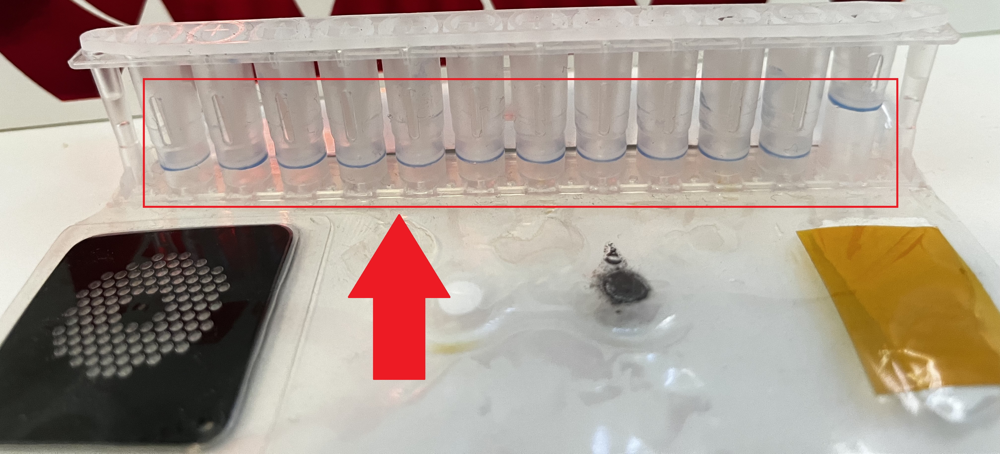

Plunger Trees seal the contents of the wells once they have been freeze-dried. When a freeze dryer completes its run, the shelves are lifted against one another. This forces the plunger trees down into the pouches, sealing the contents of each well.
The pouch has twelve wells and the plunger has twelve branches. On the plunger tree, there is one branch that is shorter than the rest. This branch is inserted into the furthest well to the right. Begin by inserting one tree into the pouch, make sure each well is covered and that the tree is resting parallel to the tray. If the tree is sitting at an angle, the tree was likely inserted incorrectly. If for any reason, a tree branch is inserted into the wrong well, place it in the scrap bin and grab a new plunger tree.
The FLA inserts the plunger trees into the pouches. For the machine to function, it's important to understand the light indicator system of the FLA. There is an indicator mounted above each opening into the FLA. They indicate to you whether or not it is an appropriate time to reach into the machine. Similar to a traffic stop light, green means go, red means stop, and yellow means that a stop is soon approaching. Never reach into the FLA while a red light is present. If it happens, the FLA will immediately stop whatever it's doing to protect the operator. Yellow light will indicate that a stop is coming. If you notice a yellow light, finish your task promptly and step away from the machine. A green light indicates that you are free to reach into that area of the machine. The next step will be removing the tray from the FLA. While the indicator is flashing green, you may reach in and pull the tray towards you gently. Upon bringing it out of the FLA, lift the tray using both hands, making sure to hold the outer bars on each side. Use absolute care when handling trays with wet chemistry in them. Locate the assigned freeze dryer for that tray, use your hip to hold the bar of the tray closest to you, then use your free hand to open the freeze dryer. Slide the tray into the next avilable shelf. Make sure to line it up in the middle of the shelf and gently slide until the back of the tray is flush against the two metal rods in the back of the chamber.
Which end of the pouch does the shortest branch go in?
At what times is it ok to reach inside of the FLA?